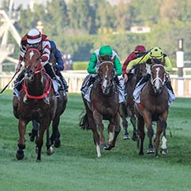
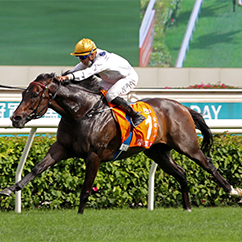

The horse racing culture originated in England. The first formal horse racing event was held in the London horse market in 1174. Around the 13th century, horse racing fever swept across the European continent.
In France, horse racing culture also had a strong influence. The first horse racing event in France was held in 1776, and in the early 19th century, the first horse racing association in France was established at the Chantilly horse racing training base near Paris (which is still the center of horse racing in France today).

In 1870, Parisian businessman Oller invented horse racing lottery, which quickly became a popular horse racing betting method worldwide, and it is still popular in France and around the world. However, for horse lovers, horse racing itself is primarily a culture.
Horse racing in Hong Kong began in 1841.
In 1884, the Hong Kong Jockey Club was established, and it has been over 130 years now. Since 2002, Hong Kong has gradually stepped onto the international horse racing stage. The Hong Kong International Races held annually in December have now increased to four events - the Hong Kong Cup, Hong Kong Mile, Hong Kong Sprint, and Hong Kong Vase, with participating countries expanding to horse racing powerhouses such as Europe and America.
In 2008, the equestrian events of the Beijing Olympics were held at the Sha Tin Racecourse in Hong Kong.